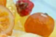
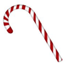

Jardin bonbonnier... pour en savoir plus !
Quelques définitions
Les pâtes de fruits
: Les pâtes de fruits sont
un mélange cuit de pulpes de fruits,
de sucre,
de glucose
(éventuellement du gélifiant pectine).
Les fruits confits
: Les fruits confits sont
des fruits trempés un certain nombre de fois
dans des sirops de sucre
de plus en plus concentrés.

Les bonbons
: Les bonbons
en sucre cuit,
faits à base de sucre et de pectine,
additionné d’un parfum véritable, de plante…
(aujourd’hui arômes artificiels et colorants).

Les dragées
: Les dragées,
avec un noyau en amande (ou autre)
enrobé petit à petit avec du sucre liquide cuit
déposé dans un appareil cylindrique
(ressemblant à une bétonnière)
chauffé à la vapeur.
Quelques plantes de confiserie
-
-
Glossaire du jardinier
Plante annuelle : Plante dont le cycle végétatif se déroule sur la même année.
Plante bisannuelle : Plante qui accomplit son cycle de vie sur 2 années. Elle produit des feuilles la 1ère année après la germination. Elle fleurie, graine puis meurt la 2ème année.
Plante vivace : Plante pérenne pouvant vivre plusieurs années. Elle subsiste l’hiver sous forme d’organes spécialisés souterrains protégés du froid.
Vocabulaire usuel
Humus : Produit résultant de la décomposition des matières organiques.
Terreau : Support de culture naturel formé de terre végétale enrichie de produits de décomposition qui apportent la matière organique. Il est utilisé pour les cultures potagères ou horticoles.
Permaculture : Système de jardinage durable, économe en énergie. Ces façons de faire s’efforcent d’apporter des réponses naturelles aux préoccupations du jardinier (préparation du sol, fertilisation, besoin en eau et maîtrise des indésirables : herbes – ravageurs et parasites). Le paillage : couvrir la terre de végétaux – évite que la terre subisse de plein fouet les aléas climatiques.
La grelinette ou aérobêche : Outil permettant d’aérer facilement le sol sans retourner la terre et donc sans trop perturber la vie du sol.
La binette : Outil à manche court (environ 1,10 m) serti d’une plaque de fer rectangulaire. Sert à nettoyer un terrain des mauvaises herbes.
Le râteau : Outil avec un manche et des dents, comme un peigne en métal. Avant de semer, la terre doit être ameublie, aérée et décroûtée.